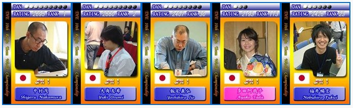
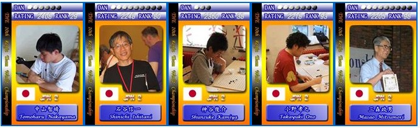
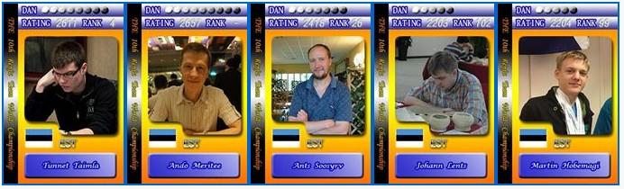
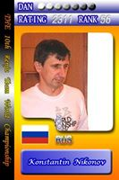
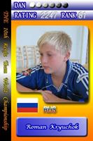

第十届世团赛队伍简介
五子棋新闻
#1 第十届世团赛队伍简介
作者：无尽 发表时间：2014-4-24 7:44:08
日本１隊
１隊的隊長由曾在中國工作的田村一誠擔任，其中田村、大角、中村是上屆的奪冠班底。新面孔之中，老將飯尾義弘，2010年就曾代表日本出賽，今年在珠王戰中勇奪季軍，再度獲選進入１隊
日本隊的嬌點多田阿哉子，是這次比賽唯一的外國女棋手，也是中村的弟子之一，福井暢宏近年迅速崛起，去年獲得中段戰冠軍，似乎是日本近期升段最迅速的棋手，他們兩位都是2010年世團賽的接待人員，未料再次碰頭，已是坐在棋盤對面的競爭對手
田村在國內賽印象沒有太突出的表現，但上屆世團賽他出賽５場，取得４勝１和的佳績，是幫助日本奪冠的重要功臣
如果要選一位日本年輕一輩的棋手代表，絕對非大角友希莫屬，不但曾取得名人頭銜，去年更跌破眾人眼鏡拿下世界盃亞軍，也成為日本年輕世代中第一位９段棋士
而一台的當然人選，就是長期霸佔世界積分排名榜龍頭，現任日本名人的中村茂，他的天分堪稱百年難得一見，他的對局曾引領棋界潮流，他的棋力被評價有１３段，他手上也有兩座世界冠軍，其他的豐功偉業多不勝數，礙於篇幅，請大家自行Google
台灣的棋迷們何其幸運，五子棋界兩大傳奇中村和Ando首次在世界盃同台登場，想要一睹風采的棋迷們，千萬把握這千載難逢的機會啊！！！
整體來說，尋求衛冕的日本１隊陣容強大，只要穩定發揮，奪牌機會濃厚

［此帖子已被 无尽 在 2014-4-26 19:05:04 编辑过］
#2 Re:第十届世团赛队伍简介
作者：无尽 发表时间：2014-4-24 7:44:19
日本２隊
日本為上屆世團賽冠軍隊伍，本屆享有派出兩隊的權利，２隊隊長由石谷信一擔任。此次比賽中最年長的選手，就屬７７歲的三森政男，目前為日本連珠社理事長，早年經常帶隊出國推廣五子棋。而真野芳久據說也是年紀較長的選手，這次是首度參與國際賽事。查看對局紀錄，這三位選手仍活躍於國內外賽場上，其中石谷去年在世界盃ＢＴ組拿下第三名
日本老一輩選手的棋風，多為穩健而堅實，善於防守反擊，對上他們若太衝動可討不到好處
不過２隊較需注意的仍是年輕世代，一台估計會是神谷俊介，雖然是２隊中段位最低，但有在下棋的都知道，段位只是參考，從近期成績來看，有慢慢衝擊日本一線選手的態勢。小野孝之為中村茂徒弟之一，國際賽最好的紀錄是曾打進過世界盃ＡＴ組
而２隊中最強大的，應該就是中山智晴，常出沒於網路，中英文能力都很不錯，和我選手有些交情，他也是上屆日本代表隊成員之一，當時雖為替補，仍取得２勝４和的不敗戰積，估計本屆也會放在替補，做為一枚可隨時調動的活棋
日本年輕一輩的風格，可以看得出前輩們統傳棋風的痕跡，又更增添一份積極進攻的味道，且對流行變化掌握度較佳，不容易中招
整體來說，日本２隊主要扮演助攻的角色，期望能從其他國家手裡多拿點分數，幫助日本１隊衛冕冠軍

［此帖子已被 无尽 在 2014-4-26 19:07:19 编辑过］
#3 Re:第十届世团赛队伍简介
作者：无尽 发表时间：2014-4-24 7:44:27
愛沙尼亞隊
此次仍由Ants Soosyrv領軍，一台應該是現任世界冠軍Tunnet Taimla，其去年以不敗的戰績，提前一輪拿下冠軍，實力可想而知，這也是他第二個世界冠軍（上一次是在2003年）
二台個人猜測是Ants Soosyrv，他是愛沙尼亞五子棋的重要推手，上個月還帶隊到中國交流，棋力也是ＡＴ等級，而年僅１７的Martin Hobemagi則是近期愛沙尼亞的後起之秀，去年世界盃也進入ＡＴ決賽，是一名進攻犀利的選手，Johann Lents在上屆世團賽也是愛沙尼亞代表隊成員之一
但相信許多人最關心的，還是定居台灣多年，拿過最多次世界冠軍（４次）的五子棋界傳奇人物Ando Meritee，雖已五年未曾出賽，此次復出仍備受期待
整體來說愛沙尼亞隊是一支非常有奪牌希望的隊伍
註：五子棋世界盃單數年是個人賽，雙數年是團體賽，ＡＴ是個人賽裡最終階段的循環賽，ＡＴ冠軍也就是該年的世界冠軍
說明一下圖卡，DAN是段位，RATING是五子棋世界等級分，RANK是等級分的排名，若五年未出賽或未達規定局數是不列入排名的
世界排名：http://renjuoffline.com/renju-rating/
［此帖子已被 无尽 在 2014-4-24 7:47:22 编辑过］

［此帖子已被 无尽 在 2014-4-26 19:06:49 编辑过］
#4 Re:第十届世团赛队伍简介
作者：无尽 发表时间：2014-4-24 7:44:36
俄羅斯隊
本屆的俄羅斯隊少了大家熟悉的身影--俄羅斯第一高手Vladimir Sushkov。但是身為連珠傳統勁旅，俄羅斯隊本屆的名單仍是高手雲集，五名隊員裡有四位曾有打過有過世界盃ＡＴ的經驗。
俄羅斯隊長由Dmitry Epifanov擔任，估計也將扛下一台大任。或許大家對這名選手不熟悉，但他早在2007年就曾奪得世界盃慢棋賽冠軍、去年在世界盃ＡＴ為俄羅斯搶下一個國家名額，今年也成功衛冕俄羅斯最高聯賽冠軍，實力不言而喻。
本屆俄羅斯隊大賽經驗最豐富的棋手非Konstantin Nikonov莫屬。棋齡超過３０年，1993及2001年世界盃ＡＴ選手，前俄羅斯冠軍，更曾在９０年代獲得俄羅斯九段頭銜，棋風剽悍攻擊性強，常讓對手吃盡苦頭。
Sergey Artemev則是棋風較偏陰柔的棋手，他也是2005和2011世界盃ＡＴ選手，最佳戰績是在2005年ＡＴ奪得了殿軍。
而年僅１８的Roman Kryuchok，出身於Podyuga體系，是前世界最強女棋手Yulia Savrasova的師弟，棋風亦承襲了Podyuga的強力攻擊風格。於2012年世界盃青少年錦標賽男子１３～１７歲組以全勝之姿強勢奪冠，更在今年於莫斯科舉辦的邀請賽中擊敗前日本名人河村典彥九段，可說是後生可畏。
最後是近年來鮮少參賽，但只要出賽均能奪得佳績的Konstantin Chingin。上屆世團賽以候補之姿奪下３勝３和不敗佳績。2003年世界杯ＡＴ殿軍、2005年ＡＴ季軍、2007年ＡＴ亞軍，目前世界排名第７，個人預估是本屆俄羅斯實力最強勁的選手。本屆應該也是擔任候補，並在關鍵時刻披掛上陣。
整體來說，即使少了Sushkov，俄羅斯這支隊伍仍有衝擊冠軍的實力。


［此帖子已被 无尽 在 2014-4-24 23:12:12 编辑过］
#5 Re:第十届世团赛队伍简介
作者：无尽 发表时间：2014-4-24 7:44:44
中华１隊
擁有國際賽經驗超過十年的陳科翰，自然是中华台北隊長的不二人選，他去年單槍匹馬征戰世界盃，不但拿下ＡＴ第６，為台灣取得下屆ＡＴ名額，也一舉刷新自己的最佳成績
幾乎每次都入選國手的楊裕雄，這屆也沒有缺席，他和陳科翰都是上屆世團賽中华台北隊代表，這次仍要借重他穩定的實力
以研究一些特別變化著稱的鄭志良，也是第一位在山口規則下升初段的選手，近兩屆世團國手賽都拿下亞軍。而網路棋手發跡的林仕斌，對大部份開局均有一定了解，並有自己的研究，2012年季賽曾連續逼和林皇羽及林書玄。他們兩位都是第一次參與國際賽，因棋風有別於１隊其他選手，這次很可能會放在替補以靈活調度
上月剛獲得台灣名人頭銜的林書玄，唯一的國際賽經驗是在2010年的日本世團賽，當時以初段身份坐陣一台，在外國選手都不熟悉的情況下，擔任扮豬吃老虎的角色，拿下不錯的成績
台灣最高段棋士的林皇羽，同樣是位國際賽的沙場老將，成績一年比一年進步，2011年世界盃時，資格賽以吊車尾的名次驚險進入ＡＴ循環，最後竟脫穎而出拿下亞軍，為台灣史上最佳成績，是台灣首位也是唯一一位世界排名前十的選手
整體來說，中华１隊選手多有國際賽經驗，對上外國選手並不陌生，加上有主場優勢，奪牌機會大增，當然１隊的目標只有一個 － 將冠軍盃留在台灣
［此帖子已被 无尽 在 2014-5-3 17:55:51 编辑过］
#6 Re:第十届世团赛队伍简介
作者：无尽 发表时间：2014-4-24 7:44:53
中华２隊
特地回參賽的簡詠璇，上屆就曾代表台灣出賽，去年參加五子棋公開賽，一舉拿下女子組亞軍，今年在上海名人賽又以決賽第一晉級名人挑戰賽，本次獲得推薦，並擔任２隊隊長
許久不見的林劉民，2009年國手賽時，連克二位台灣最高段的選手，之後沉寂一段時間，此次國手賽復出，依然維持一定水準，拿下第４入選國手
近期才冒出頭的黃雅慧，雖然年紀輕輕，尚未滿２０，但下棋的觀念蠻清晰的，去年剛升初段後，馬上打進名人賽決賽循環，這次的國手賽又晉升二段，是少數實力強勁女棋手
目前還是台大研究生的黃彥樺，也是百忙之中抽空練棋參賽，棋風中規中矩，曾二度逼和現任名人，這次以國手賽季軍入選國手
同樣在一年內連升兩段的張家程，各種棋類皆有涉略，憑藉著曾是圍棋老師的棋感，順利取得國手資格
早在2001年就參加世界盃的陳威翰，是台灣最早一批征戰世界的選手之一，這次不僅要靠實力，還需要借助他的大賽經驗，帶領２隊的小將們一起為台灣爭光
整體來說，中华２隊對外國人來說，幾乎沒有國際賽資料可以研究，是一支迷樣的隊伍，２隊選手們只要能正常發揮，有機會給老外迎頭痛擊
［此帖子已被 无尽 在 2014-5-3 17:56:48 编辑过］
#7 Re:第十届世团赛队伍简介
作者：无尽 发表时间：2014-4-24 9:45:08
直接复制粘贴facebook的图片，看来不行，回去再重新弄。
#8 Re:第十届世团赛队伍简介
作者：梧桐风 发表时间：2014-4-24 15:27:43
安度还行嘛?
#9 Re:梧桐风【==Re:第十届世团赛队伍简介==】
作者：不明飞行物 发表时间：2014-4-24 17:21:19
引用：
原文由 梧桐风 发表于 2014-4-24 15:27:43 :
安度还行嘛?
来者不善~~
#10 Re:不明飞行物【==Re:梧桐风【==Re:第十届世团赛队伍简介==】==】
作者：梧桐风 发表时间：2014-4-24 17:49:04
啥不善啊，就在家门口能不去打打酱油么
#11 Re:第十届世团赛队伍简介
作者：aabb 发表时间：2014-4-24 19:55:37
ANDO不打一台？还想看他和中村再决胜负呢。
#12 Re:第十届世团赛队伍简介
作者：继续沉醉 发表时间：2014-4-25 13:29:35
整了半天安度不是一台啊，那还有啥看头
#13 Re:第十届世团赛队伍简介
作者：一三九喝老酒 发表时间：2014-4-26 10:08:41
中国队不参赛，也就算了，怎么没有台湾队介绍啊
#14 Re:一三九喝老酒【==Re:第十届世团赛队伍简介==】
作者：aabb 发表时间：2014-4-26 17:57:14
台北一队前三都是老牌强手。。
#15 Re:一三九喝老酒【==Re:第十届世团赛队伍简介==】
作者：无尽 发表时间：2014-4-26 19:07:51
引用：
原文由 一三九喝老酒 发表于 2014-4-26 10:08:41 :
中国队不参赛，也就算了，怎么没有台湾队介绍啊
要等他们更新，我只是转的。
#16 Re:第十届世团赛队伍简介
作者：一三九喝老酒 发表时间：2014-4-26 21:14:51
我们现在中国队没办法支持了，只能支持一下中国台北队了，应该还是几个老面孔吧
#17 Re:无尽【==Re:一三九喝老酒【==Re:第十届世团赛队伍简介==】==】
作者：aabb 发表时间：2014-4-27 20:24:57
楼主怎么上的FB？
#18 Re:第十届世团赛队伍简介
作者：怪 发表时间：2014-5-1 18:25:30
支持简！！！
#19 Re:第十届世团赛队伍简介
作者：茗弈妙手 发表时间：2014-5-3 15:00:19
福井畅宏是不是nobu？
#20 Re:第十届世团赛队伍简介
作者：没事摆石子玩 发表时间：2014-5-3 17:36:28
叔叔 你太惦记你的好基友了。。。下次搞基时你问问他。。。